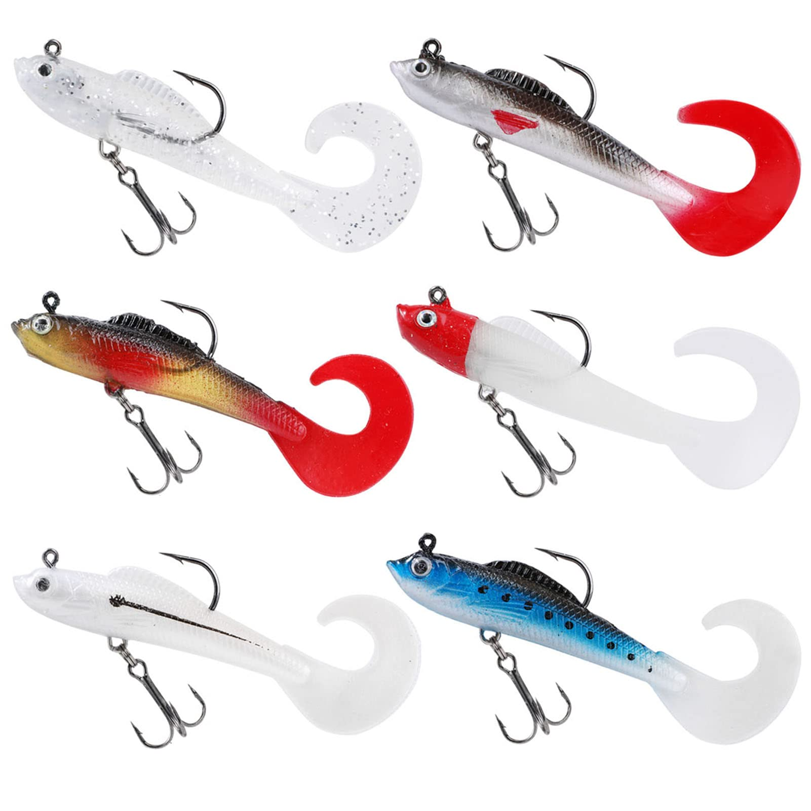

Señuelos per a la pesca del Black Bass
Els señuelos són una part fonamental per a la pesca del Black Bass. Cada tipus està dissenyat per imitar el comportament de les preses i atraure aquesta espècie de peix. Alguns dels més utilitzats són:
-
Vinils (Soft Plastics):
Són extremadament versàtils i imiten cucs, granotes o peixos petits. Ideals per a tècniques com el Texas Rig o el Carolina Rig.
 -
Crankbaits:
Señuelos rígids amb forma de peix que es submergeixen a diferents profunditats. Són perfectes per cobrir grans zones d'aigua i buscar el Black Bass actiu.
-
Spinnerbaits:
Aquests señuelos compten amb culleretes metàl·liques que reflecteixen la llum, simulant peixos petits. Funcionen molt bé en aigües tèrboles o amb poca visibilitat.

-
Jerkbaits:
Ideals per imitar un peixet ferit. Són molt efectius a l'hivern i a la primavera, quan el Black Bass està més atent a preses fàcils.
-
Topwater:
Aquests señuelos, com granotes artificials o poppers, floten a la superfície i són increïblement emocionants per a la pesca en zones amb vegetació.

Seleccionar el señuelo adequat depèn de diversos factors com la temporada, el clima i el comportament del Black Bass. Experimentar amb diferents opcions pot millorar significativament els resultats.